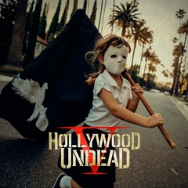

Hollywood Undead

Album "V" sorti le
27 octobre 2017
Hollywood Undead (HWU) est un groupe de rap rock* américain, originaire de Los Angeles, en Californie. Le groupe est formé en 2005. Au début de 2010, le groupe annonce le départ de son chanteur Deuce. Deuce sera vite remplacé par Daniel Murillo, surnommé Danny. Ils comptent quatre albums : Swan Songs en 2008, suivi deux ans plus tard de Desperate Mesures qui contient à la fois des chansons inédites, des reprises, des chansons enregistrées en live et un DVD de 60 minutes retraçant un concert. L'album American Tragedy est publié le 5 avril 2011. Le single Hear Me Now est disponible depuis le 21 décembre 2010 et le 5 février 2011 à minuit, le groupe met en ligne une nouvelle chanson de leur dernier album, intitulé Comin' in Hot, il est le premier album où chante Danny, depuis le départ de Deuce.
Leur troisième album Notes from the Underground est publié le 8 janvier 2013. Le quatrième album du groupe intitulé Day of the Dead est publié le 31 mars 2015. Leur cinquième album, intitulé V, est prévu pour le 27 octobre 2017. Le 2 novembre de l'année suivante, le groupe sort un EP intitulé Psalms qui comporte 5 chansons.
Le groupe prévoit la sortie de leur sixième album New Empire Vol.1 pour le 14 février 2020.
Presentation
- Jorel « J-Dog » Decker – chant, guitare, basse, claviers, synthétiseur, programmation (depuis 2005)
- Dylan « Funny Man » Alvarez – chant (depuis 2005)
- George « Johnny 3 Tears » Ragan – chant (depuis 2005), basse (depuis 2013)
- Jordon « Charlie Scene » Terrell – chant, guitare (depuis 2005)
- Daniel « Danny » Murillo – chant (depuis 2009), claviers (depuis 2011), guitare (depuis 2013)